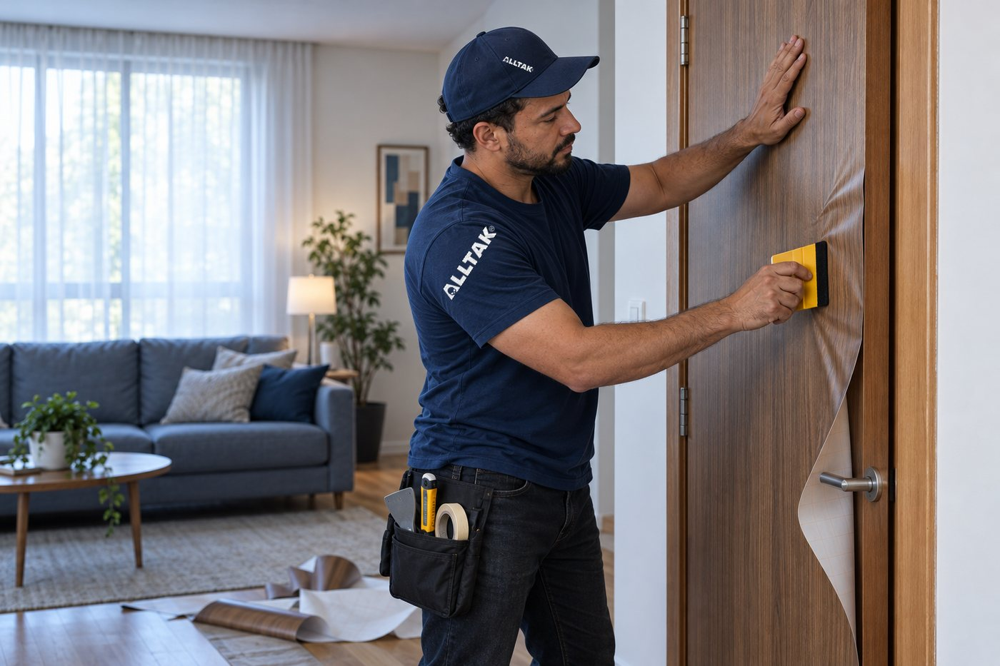
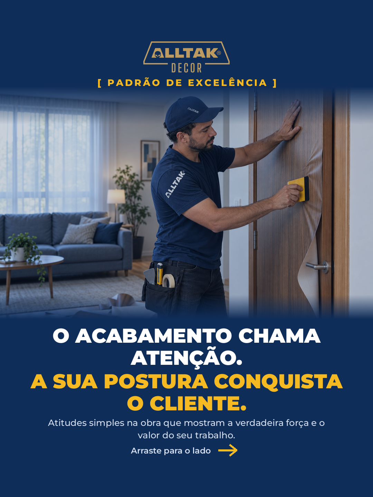
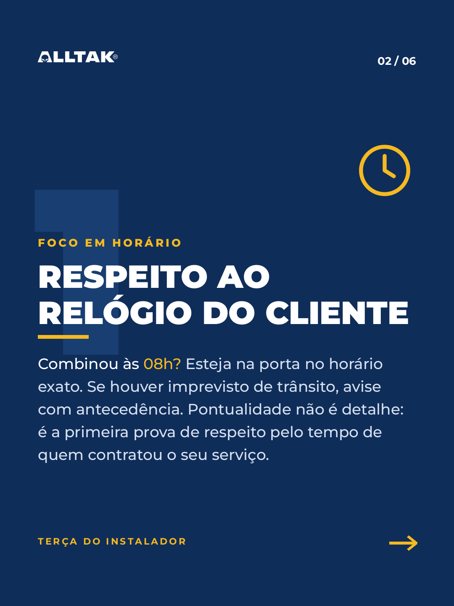
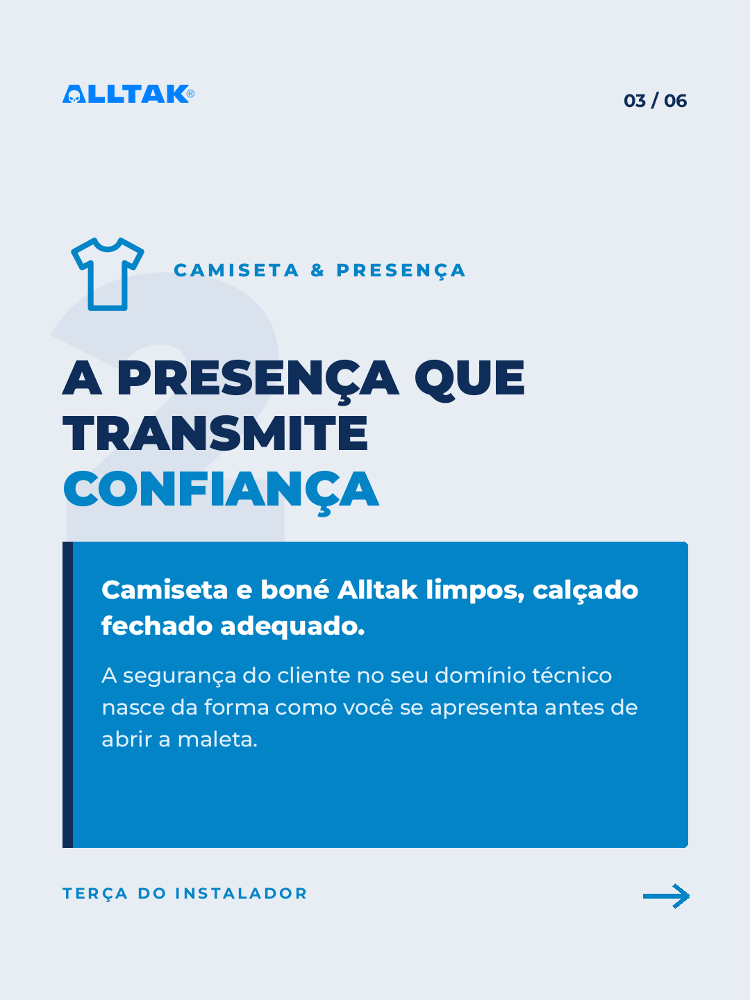
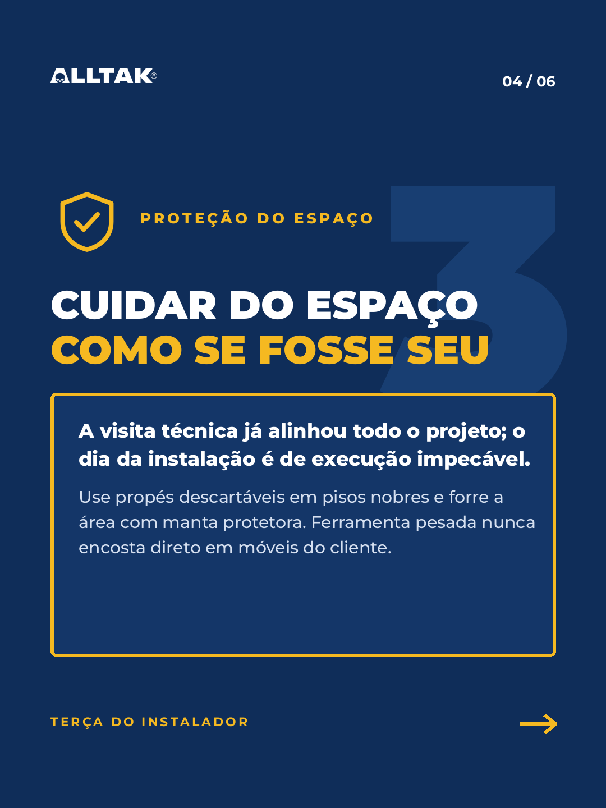
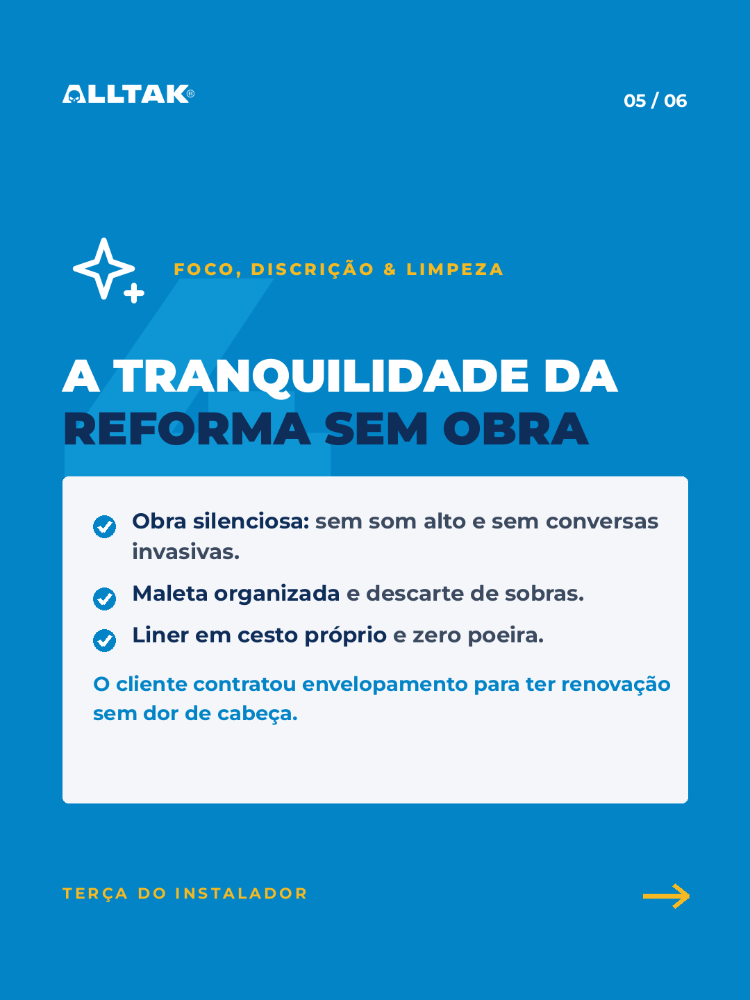
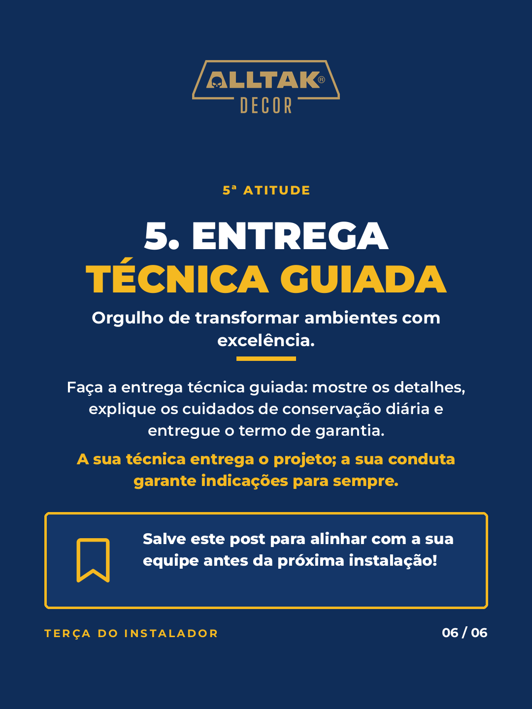
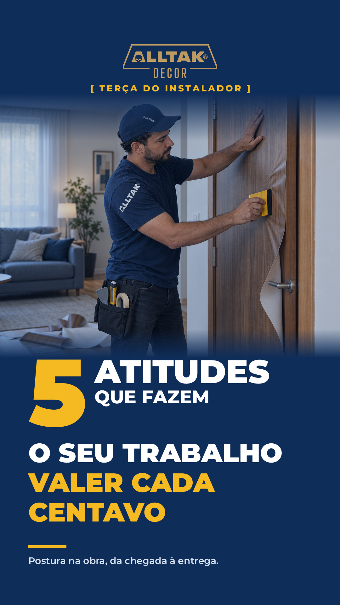

TERÇA DO INSTALADOR
Construção pessoal · Envelopadores
5 atitudes que fazem o seu trabalho valer cada centavo
Postura na obra, da chegada à entrega: o post que celebra o instalador de alto padrão.

QUEM SOMOS
Quem é a 75 LAB
Dois lados do balcão, uma agência que entrega o que acontece na loja
Caique veio do varejo, Daniel veio da indústria. Estratégia, criação, produção e medição de ponta a ponta.
0+anos entre a marca e o canal
0sócios, um do varejo e um da indústria
0frentes de ponta a ponta
Marcas que confiam na 75 LABAlltakPanasonicSEMPPancoNutrifyScalaSearaNestlé
Fonte: 75 LAB, apresentação institucional, 2026
KEY VISUAL

Key visual
Um instalador simples, com a marca no peito da obra
Conceito: a postura conquista o cliente
Herói: camiseta e boné com o logo Alltak, bolsa de ferramentas na cintura
Cor: azul institucional com ouro de realce
Cena: sala decorada e porta envelopada, o resultado do trabalho
Fala com: o envelopador que quer ser recomendado
Desdobra: seis lâminas e a capa de WhatsApp
CARROSSEL
Arraste para o lado
Uma atitude por lâmina, da chegada à entrega
0
lâminas 1080 x 1440, a capa está na tela anterior




Fonte: briefing Alltak, 26/10/2026
CAPA PARA WHATSAPP

Para os grupos
Uma capa que para o dedo no meio da conversa
Formato vertical 1080 x 1920, com o número 5 em destaque e o convite ao carrossel.
0px de largura
0px de altura
0px de margem
Fonte: briefing Alltak, 26/10/2026
AS ATITUDES
Da chegada à entrega
A postura constrói autoridade e gera indicação espontânea
1
Respeito ao relógioPontualidade é a primeira prova de respeito.
2
Presença que transmite confiançaCamiseta e boné Alltak limpos, calçado fechado adequado.
3
Cuidar do espaço como se fosse seuPropés, manta e ferramenta longe dos móveis.
4
Foco, discrição e limpezaObra silenciosa e zero poeira.
5
Entrega técnica guiadaDetalhes, conservação e termo de garantia.
ESPECIFICAÇÃO
Arquivos e identidade
Tudo no padrão Alltak, pronto para publicar
Formatos
- Carrossel: 6 lâminas, 1080 x 1440 px
- Capa WhatsApp: 1080 x 1920 px
- Margens: 120 px em cima e embaixo
- Arquivos: PNG otimizado
Cores e fonte
#0f2d59#0284c7#F5B921
- Títulos Montserrat Black
- Texto Montserrat Medium
Logos oficiais
- Preferencial azul em fundo claro
- Versão branca em fundo azul
- Decor em ouro #BD9B60
75 LAB
Próximo passo
Posso seguir com a publicação do post nesta versão?
75 LAB Estratégia, Design e Produção
CENU · Centro Empresarial das Nações Unidas, Torre Norte
Av. das Nações Unidas, 12.901, Brooklin, São Paulo, SP, CEP 04578-910
contato@75lab.com.br · 75lab.com.br · @setecincolab · (11) 98676-5634
Fale conosco no WhatsApp
CENU · Centro Empresarial das Nações Unidas, Torre Norte
Av. das Nações Unidas, 12.901, Brooklin, São Paulo, SP, CEP 04578-910
contato@75lab.com.br · 75lab.com.br · @setecincolab · (11) 98676-5634